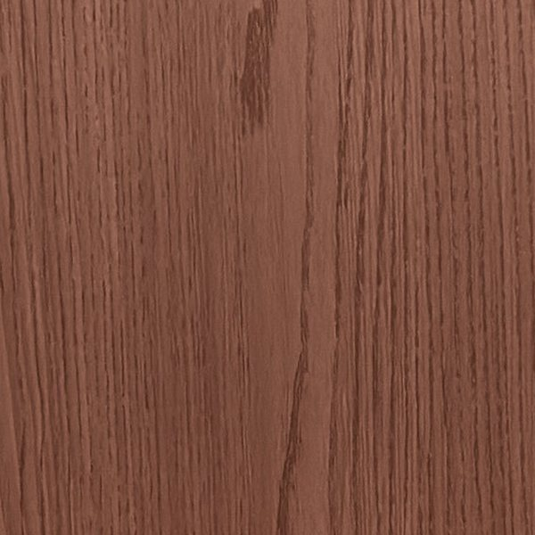
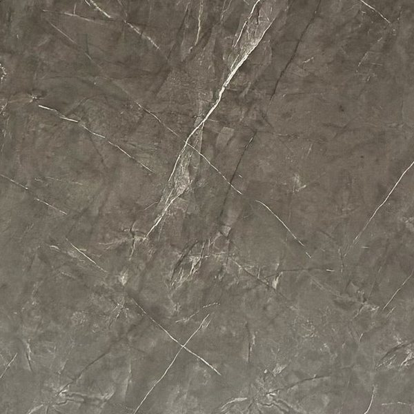
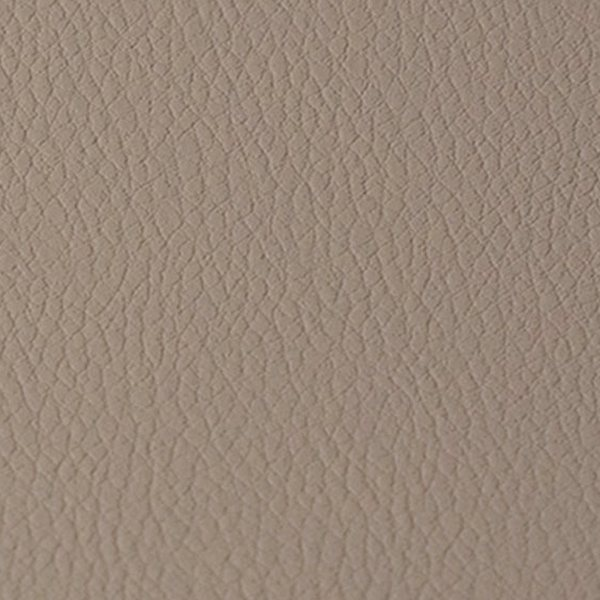
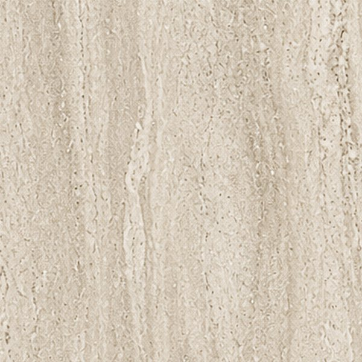
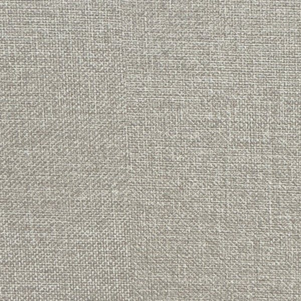
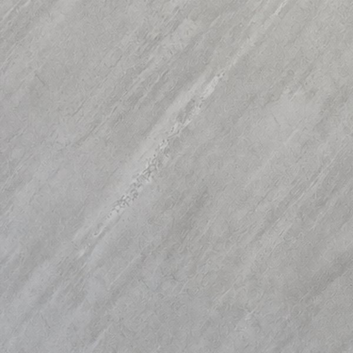
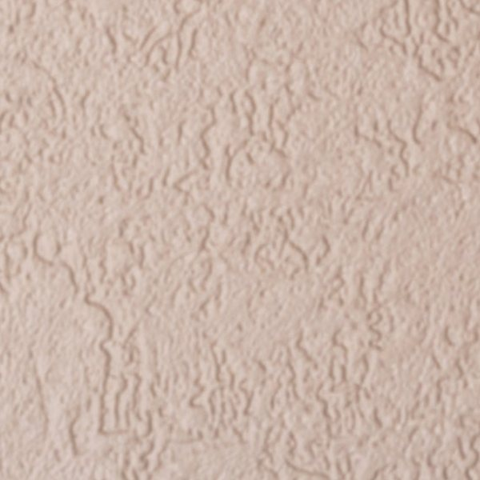
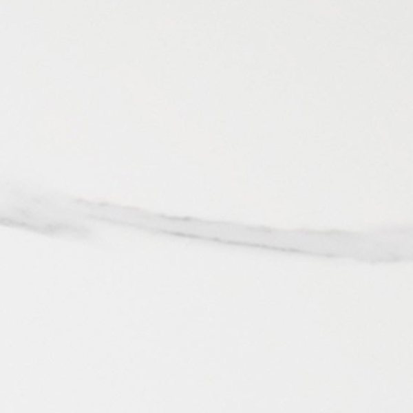

Inspiratie v2 · gebouwd op zoekdata · zonder fotoshoot · nog niets aangepast
Inspiratie die gevonden wordt
Versie 2. Uitgangspunt: wat mensen echt zoeken (Google Search Console, 90 dagen) en een beeldtaal die zonder fotoshoot premium is. Elke ruimte krijgt een eigen gids die één zoekvraag goed beantwoordt; samen vormen ze de inspiratiepagina. Echte projecten komen erbij zodra er goede foto's zijn.
1Wat Google nu laat zien
Inspiratie + 6 artikelen · 90 dagen
115
vertoningen in Google
2
klikken
De pagina's bestaan, maar beantwoorden geen zoekvraag. Ter vergelijking: de homepage en collecties halen samen duizenden vertoningen.
Zoekvragen waar nu geen goede pagina voor is
| Zoekvraag (voorbeelden) | Vertoningen | Positie nu | Nieuwe pagina |
|---|---|---|---|
| bamboe panelen · bamboe paneel · bamboe wand · bamboe wandbekleding · wanddecoratie bamboe | ±915 | 18 – 56 | Bamboe wandpanelen: wat zijn het? |
| bamboe panelen badkamer · bamboe wandpaneel badkamer · badkamer wandpanelen · wandpanelen douche · japandi wandpaneel badkamer | ±57 | 5 – 74 | Wandpanelen in de badkamer |
| wandpanelen over tegels badkamer · wandpaneel plaatsen · montage wandpanelen | ±5 | 9 – 58 | Wandpanelen over tegels plaatsen |
| wandpanelen hoek afwerken · hoekprofiel voor wandpanelen · wandpanelen hoekprofiel | ±8 | 10 – 12 | Hoeken en randen afwerken |
| wandpaneel keuken · keuken wandpanelen · keuken wandpaneel | ±6 | 42 – 77 | Wandpanelen in de keuken |
| wandpanelen slaapkamer · wandpaneel slaapkamer · wandpanelen woonkamer · muurpanelen woonkamer | ±7 | 3 – 12 | Slaapkamer · Woonkamer |
| wandpanelen toilet | 1 | 69 | Wandpanelen in het toilet |
| akupanelen · akoestische wandpanelen · akoestiek wandpanelen | ±410 | 13 – 74 | Collectie Akupanelen verbeteren + gids Werkplek |
Vertoningen zijn die van puredeco.nl zelf; het echte zoekvolume is hoger. Bij positie 10+ zien weinig mensen je, vandaar weinig vertoningen: een goede pagina kan dat veranderen. Merknamen van anderen ('pure panelen', 1.130×) en spam-zoekwoorden uit de oude hack zijn weggelaten.
2Beeldtaal zonder fotoshoot
Drie lagen, alle drie eerlijk. Wat er niet is, wordt niet nagemaakt.






1 · Materiaalscans
Uitsneden uit de scherpe productscans (2048 px) die er al zijn. Echt materiaal, echte kleur.
2 · Lijntekeningen met materiaal
Een wandaanzicht per ruimte, op schaal (paneel 122 × 280 cm), de wand gevuld met een echt decor. Als code in het thema: geen extra laadtijd.
 Echte foto
Echte foto3 · Echte projecten (klein)
Klantfoto's klein en eerlijk als bewijs, niet als blikvanger. Zo vallen onscherpte en rommel minder op. Betere foto's schuiven later vanzelf in.
3De inspiratiepagina/blogs/nieuws · URL blijft
CollectiesInspiratieProjectenStudio
PureDecoProfessionalsSamples
Home · Inspiratie
Inspiratie & advies
Wandpanelen voor elke ruimte
Per ruimte uitgelegd: welke decors passen, hoe je plaatst en wat een wand kost. Met tekeningen op schaal en projecten van klanten.
Panelen tot 280 cm hoog, 122 cm breedVanaf € 26,33 per m²Gratis stalen · € 6,95 verzendingStudio Herwen op afspraak
Per ruimte
Waar komt je wand?
Wandpanelen in de badkamer
Decors voor natte ruimtes, plaatsen en kosten
Wandpanelen in het toilet
Kleine ruimte, groot verschil
Wandpanelen in de keuken
Achterwand en kookhoek
Wandpanelen in de woonkamer
Tv-wand en accentwand
Wandpanelen in de slaapkamer
Achter het bed
Wandpanelen op kantoor
Rust en akoestiek
Per materiaal
Kies je uitstraling
Elke tegel linkt naar de collectie.
Hout →
Marmerlook →
Betonlook →
Travertinlook →
Japandi →
Leer →

Art →

Marmer glans →
Zelf aan de slag
Plaatsen en onderhoud
Bamboe wandpanelen: wat zijn het?
Opbouw, uitvoeringen Linea en Signature, waar ze wel en niet passenLezen →
Opbouw, uitvoeringen Linea en Signature, waar ze wel en niet passenLezen →
Wandpanelen over tegels plaatsen
Ondergrond, lijm, volgorde · met tekeningLezen →
Ondergrond, lijm, volgorde · met tekeningLezen →
Hoeveel panelen heb ik nodig?
Rekenhulp: maat invullen, aantal en prijs zienBerekenen →
Rekenhulp: maat invullen, aantal en prijs zienBerekenen →
Hoeken en randen afwerken
Welk profiel waarLezen →
Welk profiel waarLezen →
Je wandpanelen onderhouden
Bestaand artikel, opgeschoondLezen →
Bestaand artikel, opgeschoondLezen →
Uit de praktijk
Projecten van klanten
Echte fotoKantoor
619 Jade + Akupaneel 302 Walnut
 Echte foto
Echte fotoKeuken
670 Pandora Slate · glans
Decor
Uitbouw
646 Khaki leer + antraciet profielen
Decor
Toilet
666 White Slate · over de tegels
Zolang er geen goede na-foto is, toont de kaart het decor zelf (gelabeld 'Decor') in plaats van een foto tijdens het werk.
Veelgestelde vragen
Kort antwoord
Wat is het verschil tussen Linea en Signature?+
Hoeveel panelen heb ik nodig voor mijn wand?+
Kan ik wandpanelen in de badkamer gebruiken?+
Kan ik eerst een staal bekijken?+
1
2
3
4
5
1Kruimelpad + ItemList-schema met alle gidsen
2Eén H1 met zoekwoord; titel in Google: "Wandpanelen inspiratie en advies per ruimte | PureDeco"
3Elke ruimtekaart is een interne link naar een gids met een eigen zoekwoord
4Tekeningen zijn code (SVG): geen zware openingsfoto, dus snel (LCP = tekst)
5Materiaaltegels linken naar de collecties: inspiratie stuurt door naar de winkel
4Een ruimtegidsvoorbeeld: badkamer · zelfde opbouw voor elke ruimte
CollectiesInspiratieProjectenStudio
PureDecoProfessionalsSamples
Home · Inspiratie · Badkamer
Gids · Badkamer
Wandpanelen in de badkamer
Kort antwoord
Ja. De panelen zijn waterbestendig en komen in één stuk van 280 cm hoog, dus zonder voegen per tegel. Kies Signature (8 mm, klik) voor een naadloze wand op een vlakke ondergrond, of Linea (5 mm) met een zichtbare naad.
Tekening op schaal · wand in 851 Travertine Ivory
01
Welke decors passen in de badkamer
Travertinlook · 851
Travertine Ivory
€ 179,95 · ≈ € 52,68 per m²
Marmer glans · 666
White Slate
€ 99,95 · ≈ € 29,26 per m²
Marmerlook · 692
Urban Smoke
€ 139,95 · ≈ € 40,97 per m²
Hout · 811
Walnut Classic
vanaf € 139,95 · ≈ € 40,97 per m²
Prijzen en prijs per m² komen live uit de winkel (zelfde berekening als op de collectiekaarten).
02
Linea of Signature
Linea · 5 mm, stomp
zichtbare naad
zichtbare naad
Signature · 8 mm, klik
naadloos op vlakke ondergrond
naadloos op vlakke ondergrond
03
Wat kost een badkamerwand
Rekenvoorbeeld
| Wand | 2,44 m breed × 2,60 m hoog |
| Panelen | 2 × 122 × 280 cm (ingekort tot 260) |
| Decor | 692 Urban Smoke · Linea |
| Totaal panelen | € 279,90 |
Reken je eigen wand uit →
04
Plaatsen, ook over tegels
Stappen met kleine tekeningen, uit de montagehandleiding. Link naar de volledige gids 'Wandpanelen over tegels plaatsen'.
Uit de praktijk
Decor
Toilet vernieuwd over de tegels
666 White Slate · glans
Veelgestelde vragen
Kan ik panelen in de douche gebruiken?+
Moet ik de tegels eerst verwijderen?+
Hoe maak ik de panelen schoon?+
Eerst voelen
Bestel gratis stalen van deze decors
Stalen kiezen →Plan een bezoek in Herwen →
1
2
3
4
5
1Article-schema met echte datum en wijzigingsdatum + BreadcrumbList
2Kort antwoord meteen bovenaan: kans op een uitgelicht fragment in Google
3Inhoudsopgave met ankers: Google toont soms directe links naar een kopje
4Echte prijzen uit de winkel + ItemList-schema; links naar de productpagina’s
5Rekenvoorbeeld beantwoordt "wat kost een badkamerwand"
Teksten in 'Kort antwoord' en FAQ worden vóór plaatsing gecontroleerd; alleen wat klopt (zoals 'waterbestendig', al goedgekeurd in de collectieteksten).
5Op mobiel
☰PureDeco⌕
Inspiratie & advies
Wandpanelen voor elke ruimte
Per ruimte: decors, plaatsen en kosten.
Badkamer
Toilet
Keuken
Woonkamer
Slaapkamer
Kantoor
Per materiaal
Hout
Marmerlook
Betonlook
Travertinlook
☰PureDeco⌕
Home · Inspiratie · Badkamer
Wandpanelen in de badkamer
Kort antwoord
Ja. De panelen zijn waterbestendig en komen in één stuk van 280 cm hoog…
6Contentplanbestaande URL's blijven; nieuwe pagina's in dezelfde blog
| # | Pagina | URL | Titel in Google | Wat |
|---|---|---|---|---|
| 1 | Inspiratie (hub) | /blogs/nieuws | Wandpanelen inspiratie en advies per ruimte | PureDeco | Nieuw ontwerp (thema) |
| 2 | Bamboe wandpanelen: wat zijn het? | /blogs/nieuws/de-voordelen-van-bamboepanelen-… | Bamboe wandpanelen: opbouw, uitvoeringen en waar ze passen | Bestaand artikel herschrijven (zelfde URL), beweringen controleren |
| 3 | Wandpanelen in de badkamer | /blogs/nieuws/wandpanelen-badkamer | Wandpanelen in de badkamer: decors, plaatsen en kosten | Nieuw |
| 4 | Wandpanelen over tegels plaatsen | /blogs/nieuws/wandpanelen-over-tegels-plaatsen | Wandpanelen over tegels plaatsen: zo doe je dat | Nieuw |
| 5 | Wandpanelen in de keuken | /blogs/nieuws/wandpanelen-keuken | Wandpanelen in de keuken: achterwand zonder voegen | Nieuw, met keukenproject |
| 6 | Wandpanelen in het toilet | /blogs/nieuws/wandpanelen-toilet | Wandpanelen in het toilet: snel een nieuwe wand | Nieuw, met toiletproject |
| 7 | Woonkamer · Slaapkamer · Kantoor | /blogs/nieuws/wandpanelen-woonkamer … | per ruimte | Nieuw (na 3–6) |
| 8 | Hoeken en randen afwerken | /blogs/nieuws/wandpanelen-hoeken-afwerken | Wandpanelen afwerken: hoeken, randen en profielen | Nieuw, linkt naar accessoires |
| 9 | 4 projecten | bestaande URL's | Project: … | PureDeco | Opschonen: oude links, lege opsommingen, labels; uitbouw = 646 Khaki |
| 10 | '5 Creatieve toepassingen' | /blogs/nieuws/tips-…-1 | — | Kopie van onderhoud: herschrijven tot '6 plekken voor wandpanelen' (verwijst naar de gidsen) of noindex |
Volgorde op basis van de zoekdata: 2 en 3 eerst (meeste vertoningen, slechtste positie). Teksten schrijf ik, jij keurt goed; niets gaat live zonder akkoord.
7Technische SEO
- Eén H1 per pagina met het zoekwoord; H2's per vraag; geen kopjes voor opmaak.
- Titel en meta per gids via pd-seo (zoals collecties), 50–60 en 140–160 tekens.
- Schema: Article (echte datum en wijzigingsdatum, auteur PureDeco), BreadcrumbList, ItemList (decors) en FAQ-opmaak (helpt de structuur; Google toont FAQ's nog maar zelden als extra weergave).
- Interne links: hub → gidsen → collecties en producten; producten en collecties linken terug naar de passende gids ('Advies voor de badkamer').
- Ankers (inhoudsopgave) zodat Google per vraag kan doorlinken.
- Snelheid: tekeningen als code, scans 600 px in WebP, foto's alleen klein en lazy; eerste beeld is tekst (snelle LCP).
- Alt-teksten beschrijvend ('Badkamerwand in 851 Travertine Ivory, tekening'), visualisaties gelabeld.
- Dubbele inhoud weg (artikel 10), oude links (/product/marmer/) naar huidige collecties.
- Blognaam 'Nieuws' → 'Inspiratie' (kruimelpad, RSS); URL blijft.
- Datums niet meer op kaarten; wel 'bijgewerkt op' in het artikel (vertrouwen + versheid).
Jouw keuzes
- Akkoord op deze opzet (hub + ruimtegidsen, beeldtaal met scans en tekeningen)?
- Mag ik starten met het thema (hub en gids-sjabloon) en de eerste twee teksten (bamboe, badkamer) als concept voor jou?
- Opschonen van de bestaande artikelen en de blognaam 'Inspiratie': akkoord?